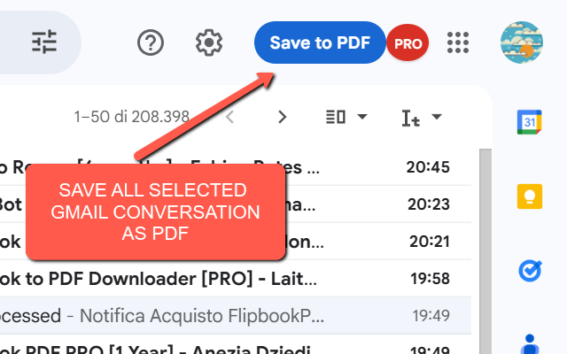
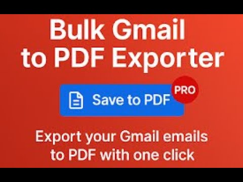

Bulk Gmail to PDF Exporter
Have you ever needed to archive, organize, or share multiple emails at once? Meet Bulk Gmail to PDF Exporter – the ultimate Chrome extension that allows you to convert one or hundreds of Gmail conversations into professional-looking PDF files 📄.
Whether you are a professional needing to keep track of client communications, a student saving research notes, or just someone who wants a permanent backup of important conversations, this tool is designed to make the process seamless. Instead of opening each email individually and struggling with copy-paste or unreliable print-to-PDF methods, Bulk Gmail to PDF Exporter automates the entire process. Simply select your emails in Gmail, click the Save PDF button, and let the extension do the heavy lifting.
The exporter keeps the original Gmail formatting intact, including attachments, inline images, and even long threads. By stitching together the full conversation, you get a readable and well-structured PDF that you can easily file, share with colleagues, or store for legal or business purposes. And the best part? It works in bulk – you can export dozens of conversations in one go, saving precious time ⏳.
🚀 How to Use
- Install the extension from the Chrome Web Store.
- Open your Gmail inbox.
- Select one or multiple conversations using the native Gmail checkboxes.
- Click the Save PDF button that appears in the toolbar.
- The extension will capture the selected conversations and automatically download the PDFs to your computer.
📷 Video Tutorial
📷 Screenshots


✅ Key Features
- Export single or multiple Gmail threads at once
- Preserves original Gmail formatting
- Supports long conversations without cuts or duplicates
- Automatic PDF naming with subject and date
- Fast, reliable, and user-friendly interface
- No extra setup or login required – works instantly
With Bulk Gmail to PDF Exporter, you can finally stop wasting time with manual exports and unreliable tools. This extension brings efficiency, accuracy, and convenience together in one lightweight package. Whether for professional, academic, or personal use, it’s the perfect way to make sure your emails are never lost and always ready to share 📧➡️📑.
View on Chrome Web Store